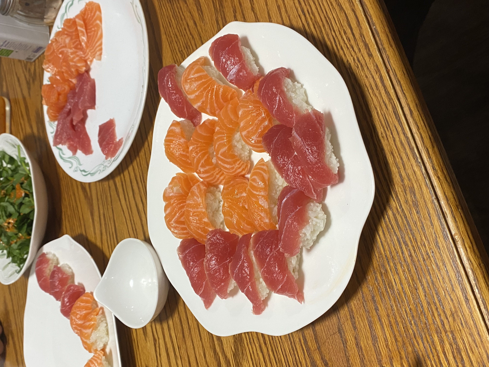
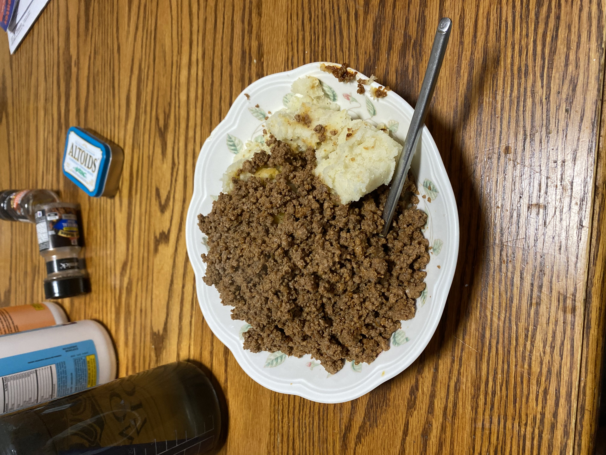
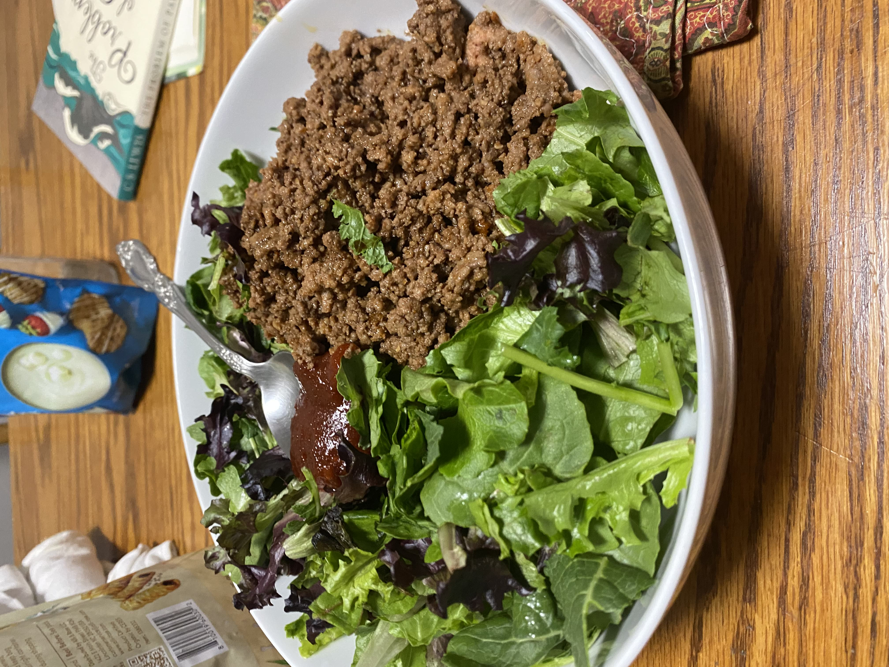
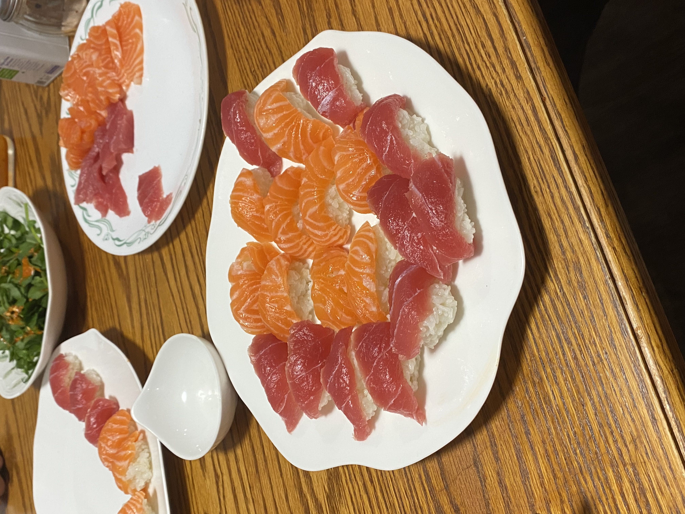
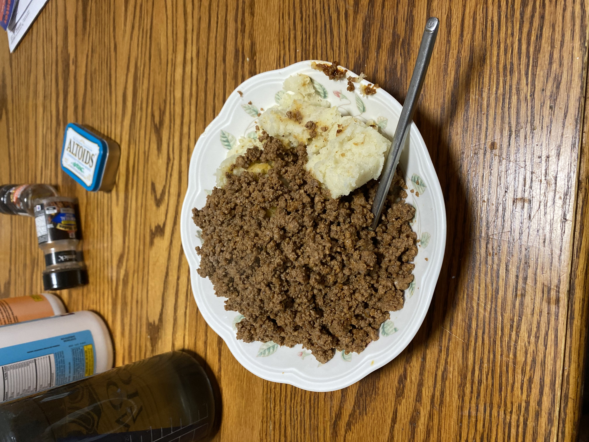
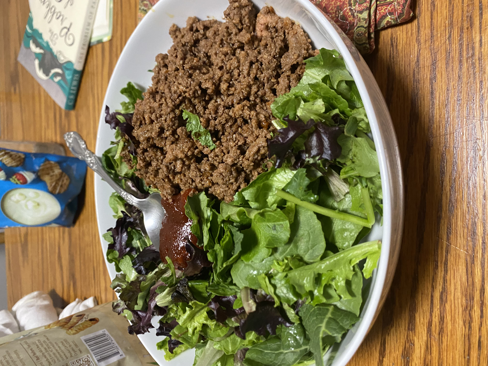
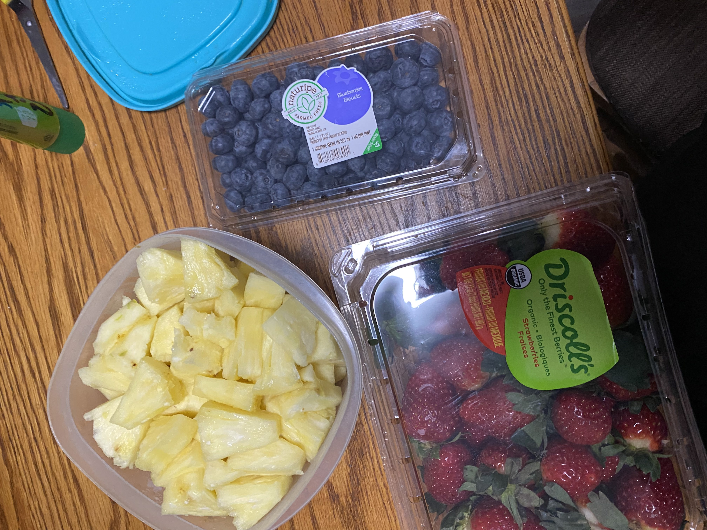
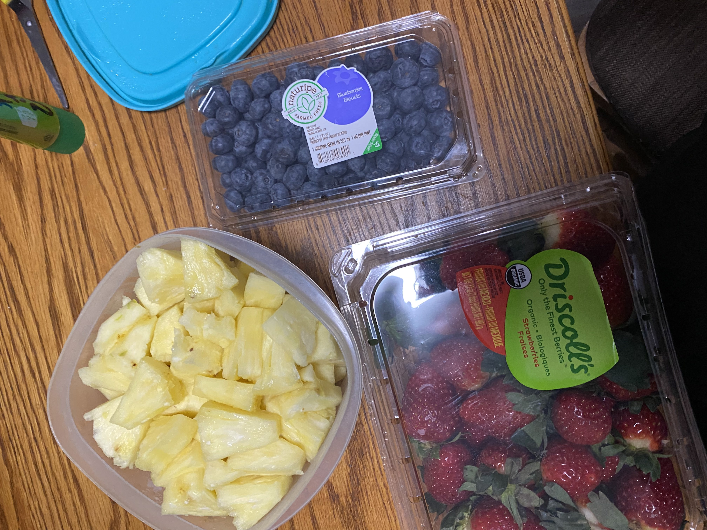

End
I didn't really have anything in mind for this project so sorry that it's a bit weird. Thank you for taking the time to look at it :).
Here are just some of the things that are saved on my Camera Roll from the past couple months. They mainly catergorized as two things: art and food. So here they are !
Some of the foods I love and have finished clean. I eat 2lbs a yogurt a day and at least 10oz of ground beef or chicken. My sweet treats consists of fruit or icecream. I love sushi too.

 






 

I didn't really have anything in mind for this project so sorry that it's a bit weird. Thank you for taking the time to look at it :).